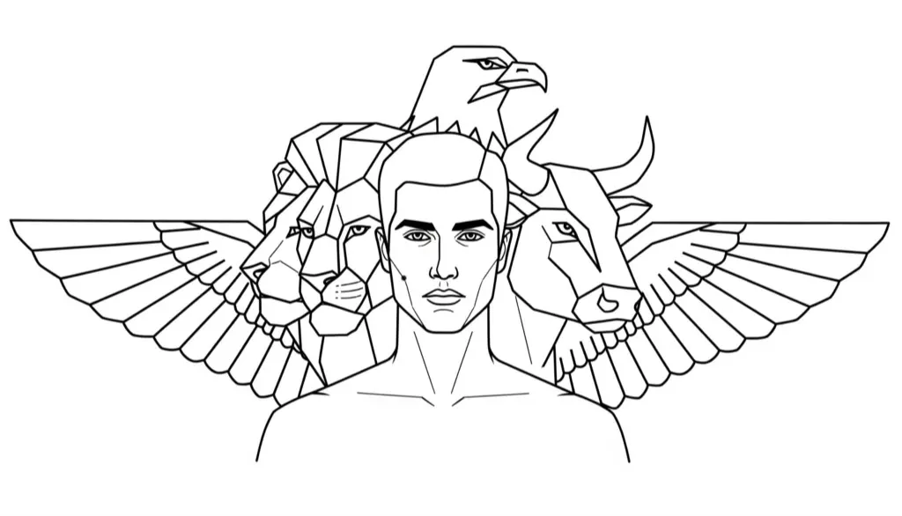

In Neville Goddard’s teaching, the Bible is not a history book but a detailed instruction on consciousness. Its characters are demonstrations of the Law of Assumption, showing how present awareness (YHVH/LORD) assumes an inner state (Ehyeh/I AM) and how the mind’s governing structure (Elohim) enforces it into manifestation.
Abraham, Jacob, Joseph, and Judah are the primary teachers of this law. Their lives illustrate how consciousness progresses through Faith, Persistence, Imagination, and Praise. Aligned symbolically with the four Gospels and Ezekiel’s vision, they show how assumed identity is the primary creative unit in reality.
ABRAHAM: FAITH (Matthew)
How to always offer the joyful version of you
Abraham, which means "Father of Many", demonstrates faith—the full inhabitation of a chosen inner state. His present consciousness (YHVH/LORD) leaves familiar territories, detaches from habitual patterns, and steps into the unseen (Ehyeh/I AM). Each step, from leaving his homeland to arranging a wife for Isaac, enacts sustained assumption; the mind’s internal governance (Elohim) enforces these states, translating inner conviction into external alignment.
“The book of the genealogy of Jesus Christ, the son of David, the son of Abraham.”
— Matthew 1:1
Faith, here, is not passive belief. It is the active dwelling in the sensation of the end already realised. Abraham’s example teaches that external circumstances bend only when the inner state is fixed, sustained, and fully assumed.
JACOB: PERSISTENCE (Mark)
How to break free from limitation in order to obtain and sustain a new identity
Jacob, which means "Supplanter / He Who Follows at the Heel", embodies persistence—the continual holding of a desired identity. His present consciousness (YHVH/LORD) encounters challenges (Laban, family, and habitual self) but refuses to relinquish the assumed state (Ehyeh/I AM). Wrestling, both literal and symbolic, represents the alignment of inner identity against external opposition until Elohim enforces it as reality. His act of approaching Isaac as Esau illustrates the principle: internal assumption, not outward form, determines outcome.
“I will not let you go unless you bless me.” — Genesis 32:26
Persistence is therefore the ongoing habitation of the chosen state. Jacob’s inner endurance, sustained sensation, and imaginative alignment ensure that the mind’s internal rulers actualise the assumed identity, transforming consciousness into tangible experience.
"In days to come Jacob shall take root,
Israel shall blossom and put forth shoots
and fill the whole world with fruit." — Isaiah 27:6
JOSEPH: IMAGINATION (Luke)
How to always feed and provide for the new righteous version of you
Joseph, which means "He Shall Add / He Shall Increase", demonstrates imagination disciplined by internal alignment. Present awareness (YHVH/LORD) inhabits abundance (Ehyeh/I AM) even amid betrayal, imprisonment, and apparent lack. By sustaining the assumed state, Joseph synchronises all conflicting parts of the mind, allowing Elohim to actualise abundance externally. Luke’s Gospel mirrors this principle through miraculous births and visions, showing that disciplined imagination transforms perception into reality.
“For with God nothing will be impossible.” — Luke 1:37
Imagination here is the deliberate occupation of the end state. Joseph teaches that consistent, aligned feeling within consciousness is what shapes the outer world, not circumstance or effort alone.
"He had sent a man ahead of them, Joseph, who was sold as a slave.
His feet were hurt with fetters; his neck was put in a collar of iron;
until what he had said came to pass, the word of the LORD tested him.
The king sent and released him; the ruler of the peoples set him free;
he made him lord of his house and ruler of all his possessions,
to bind his princes at his pleasure and to teach his elders wisdom." — Psalm 105:17-22
JUDAH | JUDAS: PRAISE (John)
How to always observe the new self as righteous
Judah, which means "Praise / Let Him Be Praised" , represents consciousness recognising and honouring the fully assumed state. Present awareness (YHVH/LORD) elevates the inner state (Ehyeh/I AM) and allows Elohim to enforce its manifestation. Judah stepping forward to protect Benjamin and fathering Perez symbolises the conscious adoption of the desired identity and its external confirmation. John’s Gospel demonstrates this principle as the state of “I AM” already inhabited, not sought.
John’s Beheading and Judas’s Betrayal:
John the Baptist and Judas illustrate preparation and release. John’s end represents the completion of conditioning; the desired state (Jesus) is now assumed. Judas reflects the mind relinquishing partial control, allowing the assumed “I AM” to solidify in consciousness, enforced by Elohim.
Male Figures as States of Being
In Scripture, "men" are symbolic expressions of consciousness forming in the mind of any individual. Abraham, Jacob, Joseph, and Judah demonstrate the stages of assumption, guiding the practitioner in inhabiting new states and manifesting them into reality.
✦ Conclusion: The Gospels as Stages of Assumption
The four Gospels illustrate the unfolding of consciousness in operation, seeded from the lives of Abraham, Jacob, Joseph, and Judah. They are not biographies but demonstrations of consciousness mechanics, showing how present awareness assumes, sustains, and externalises the inner state:
- Matthew (Abraham): Faith—the conscious inhabitation of unseen reality.
- Mark (Jacob): Persistence—holding the new state internally until enforced.
- Luke (Joseph): Imagination—assuming abundance within consciousness to shape reality.
- John (Judah): Praise—the recognition and elevation of the fully assumed state.
Through these stories, the Law of Assumption is illustrated: faith begins the journey, persistence sustains it, imagination shapes it, and praise enforces its reality. Each teacher models how identity is the core creative unit, enforced internally by Elohim, and made real in the world.
About The Author | The Four: Fathers Of The Law | Abraham Series | Jacob Series | Joseph Series | Judah Series | Numbers: Twelve